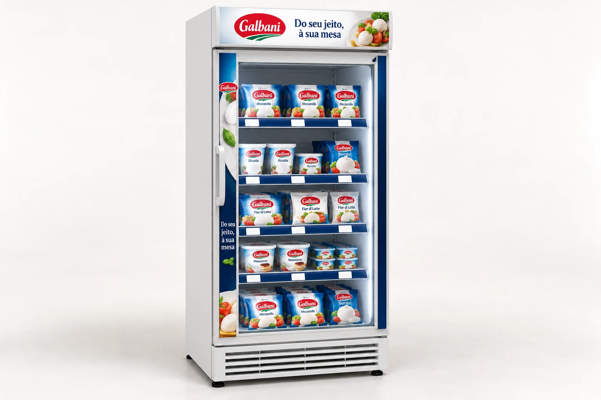

Loja pequena, pouco espaço ou sem estrutura fria.
PeçasKit de comunicação de gôndola e display de porta com ventosa.
Abrir disponibilidade sem imobilizar capital.
 ×
×

Proposta comercial · Trade Galbani 2027


Proposta 75LAB · Trade Galbani 2027
Como a 75LAB coloca Galbani na geladeira certa, com o bloco certo, e mede cada loja: da estratégia à execução.
Abrir com a tensão: na Itália a marca é sinônimo de confiança; aqui, ainda precisa ser encontrada na geladeira. Toda a apresentação responde a isso.
I · O desafio Problema aparente × problema real
Estar nas lojas de maior potencial, com abastecimento combinado.
Ser localizada em segundos, em bloco, e não em SKUs dispersos.
Abastecida, precificada e no padrão, loja a loja.
Briefing Galbani 2027; leitura 75LAB.
Não existe giro onde a marca não está. Antes de pressionar sellout, precisamos de presença qualificada e mensurável nas lojas de maior potencial.
I · O desafio Mercado e shopper
produção de queijos no Brasil em 2024, +6% em volume
ABIQ, via eDairyNews (18/07/2025)
vendas de queijos em valor em 2024, e +10% em volume
Nielsen, via eDairyNews (18/07/2025)
faturamento de mussarela, o queijo que mais cresce
Scanntech, via Giro News (09/12/2024)
por cesta, de 2024 para 2025: menos espaço para experimentar
Worldpanel by Numerator, via Mercado&Consumo (20/01/2026)
dos itens da cesta das classes AB comprados em promoção
Kantar, 2º trimestre de 2025 (04/11/2025)
usados em média por shopper: a marca precisa estar onde ele estiver
Kantar (04/11/2025)
Uma categoria aquecida atrai aquisições (Aurora, Scala, Tirolez, Savencia) e disputa o mesmo espaço frio. Para uma marca nova, disponibilidade e bloco são a primeira vantagem competitiva.
Dois movimentos ao mesmo tempo: queijo cresce em valor e volume, enquanto o shopper leva menos itens e compra mais em promoção. A marca nova precisa ser a escolha fácil.
I · O desafio Concorrência
Passe o mouse sobre cada marca
Briefing; sites oficiais Tirolez e Vigor; Mercado&Consumo (03/11/2025 e 06/03/2026); AgFeed (04/09/2025). Posições no mapa: leitura qualitativa 75LAB.
Président é do Grupo Lactalis: o papel de cada marca do grupo se define em arquitetura de portfólio, não em disputa.
Ninguém ocupa a italianidade prática do dia a dia: quem é italiano é especial, quem é cotidiano não é italiano. Atenção: Président é do mesmo grupo.
II · A solução Estratégia
Portfólio-base nas lojas de maior potencial, com condição comercial e abastecimento combinados antes da ativação.
Bloco de marca e navegação por ocasião: o shopper localiza Galbani em segundos.
Do seu jeito, à sua mesa como convite a usos reais: lanche, café, receita e finalização.
Degustação e ponto extra com missão clara: introduzir, demonstrar, vender e registrar.
Acompanhar ativos, execução, ruptura e resultado para decidir escala com evidência.
A ordem importa: não se ativa antes de entrar, não se prova sem agrupar. O último pilar volta para o primeiro.


II · A solução A plataforma
Do seu jeito, à sua mesa vira princípio operacional: a marca aparece onde se escolhe, orienta como usar e continua presente quando se serve.
Momento central. A plataforma pega o posicionamento da marca e o transforma em regra de loja: aparecer, orientar, continuar presente.
II · A solução Como funciona
Lanche, Café e Receitas: o shopper navega pelo uso, e não pelo SKU.
Portfólio-base agrupado: Galbani encontrada em segundos.
Etiqueta na própria régua, lida a distância.
“Do seu jeito, à sua mesa” com receita curta e QR.
Passe o mouse nos números para destacar cada parte do bloco. A régua por ocasião é o que traduz o posicionamento em navegação de loja.
II · A solução Peças por cluster
Loja pequena, pouco espaço ou sem estrutura fria.
PeçasKit de comunicação de gôndola e display de porta com ventosa.
Abrir disponibilidade sem imobilizar capital.
Potencial médio, com restrição de área ou contrapartida.
PeçasGeladeira 1 porta e displays de chão P e M em janelas.
Mais SKUs por loja, com baixa manutenção.
Alta relevância, boa operação fria e equipe comprometida.
PeçasGeladeira 2 portas, ilha refrigerada e ponta de gôndola vestida.
Provar o modelo e elevar conversão.
Renders ilustrativos, proposta 75LAB. Clusters: leitura 75LAB a partir do briefing. Clique nas peças para ampliar.
O ativo segue a loja, e não o contrário. Cobertura abre presença com materiais leves; crescimento ganha geladeira; a âncora recebe a estrutura completa. Clique em qualquer peça para abrir a galeria.
III · A 75LAB Plano de Rastreamento 75LAB
Leitura pontual da implantação: o ativo foi instalado, abastecido e está no padrão?
Entrega: relatório de implantação por loja e cluster, com evidências.
Acompanhamento recorrente do ativo durante toda a permanência no PDV.
Entrega: painel por rede e cluster e ritual mensal de decisão.
Sensores (temperatura, porta, localização) só como could have, depois de escopo técnico e LGPD.
One Shot responde “foi feito?”. On Timing responde “continua funcionando?”. As duas alimentam o Codice.
III · A 75LAB Por que a 75LAB
Já entregamos para o Grupo Lactalis: displays especiais e enxoval de loja de Parmalat.
Redes, lojas, baseline e clusters.
Território e bloco Da geladeira à mesa.
3D, engenharia e protótipo dos ativos.
KV de varejo, kit por ocasião e manual.
Produção, logística e instalação por cluster.
Treinamento, rastreamento e leitura do piloto.
75lab.com.br, credenciais, cases e O Método 75 (consulta em 07/10/2026).
Prova de que a 75LAB entrega o sistema inteiro, e já entregou para o próprio Grupo Lactalis. O Método 75 vira o plano de trabalho para Galbani.
IV · Plano e investimento Cronograma
Cronograma em semanas, sem datas: elas dependem do kick-off. Os marcos são pontos de aprovação, não só de entrega.
IV · Plano e investimento Investimento
R$0,00
serviços + peçasValores confirmados após o workshop de 90 minutos, com lojas, quantidades por cluster e custo total dos ativos. Pagamento e validade na versão final.
Vanessa Morelli · Diretora Comercial 75LAB
vanessa.morelli@75lab.com.br · (11) 98398-2803
75LAB Estratégia, Design e Produção Ltda. · CNPJ 55.470.982/0001-77 · 75lab.com.brValores zerados de propósito: preencher serviços e peças antes de enviar. As quantidades de cada peça dependem da lista de lojas por cluster, que sai do workshop.
Apoio Decupagem do briefing
Cerca de dois anos no Brasil; distribuição, volume e giro ainda baixos.
Vencer disponibilidade e descoberta antes de pressionar sellout.
Marca italiana da Lactalis DPA, com novo posicionamento: Do seu jeito, à sua mesa.
A italianidade precisa de tradução prática brasileira, não de decoração.
Mussarela, requeijão, creme de ricota e parmesão ralado.
Quatro portas de entrada que cobrem lanche, café, receitas, massas e finalização.
Expandir PDVs, aumentar SKUs por loja, formar bloco de marca e conquistar pontos extras.
Problema de cobertura, arquitetura de categoria e qualidade de execução.
Verba dividida em 30% + 25% + 30% + 25%.
A soma é 110%: risco de contratar além do total.
Varejo alimentar; ativos refrigerados pedem energia, manutenção e autorização; frete à parte.
Clusterizar por potencial, infraestrutura, espaço e capacidade de reposição.
Ler da esquerda para a direita: o fato que recebemos e o que ele significa. Destacar o orçamento: a soma dá 110%.
Apoio Shopper
Resolver uma refeição ou lanche.
BarreiraPouco tempo e lista mental curta.
OportunidadeFalar de ocasiões, não de discurso institucional.
Encontrar a categoria fria.
BarreiraMarca nova se mistura ao bloco competitivo.
OportunidadeBloco visual Galbani e códigos de uso.
Comparar marca, preço, formato e benefício.
BarreiraItalianidade pode parecer distante ou premium demais.
OportunidadeTraduzir em receitas e finalizações simples.
Escolher item conhecido ou em promoção.
BarreiraRisco percebido em trocar.
OportunidadePortfólio-base como entrada de baixa fricção; degustação seletiva.
Preparar e servir.
BarreiraUso único limita a recompra.
OportunidadeReceitas e comunicação por ocasião ampliam o repertório.
Briefing Galbani 2027 (jornada e tensões); curva de atrito: leitura qualitativa 75LAB.
Os dois picos de atrito estão na geladeira (achar a marca) e na decisão (risco de trocar). É exatamente onde o bloco e o portfólio-base atuam.
Apoio Clusters
O ativo segue a loja, e não o contrário: cada cluster recebe a intensidade que consegue manter.
Intensidade: leitura 75LAB a partir do briefing. Quantidade de lojas por cluster a definir com a base de redes no kick-off.
Cluster A prova o modelo, B aumenta SKUs por loja com baixo custo, C abre disponibilidade sem imobilizar capital.
Apoio Codice
Codice não substitui manutenção, promotor ou abastecimento.
Nada disso entra na proposta sem escopo técnico, autorização e base legal definidos. A funcionalidade contratada precisa ser confirmada antes de qualquer proposta comercial.
A pilha cresce de baixo para cima: sem cadastro não há evidência, sem evidência não há gestão, sem gestão não há aprendizado.
Apoio KPIs
Como medirAntes × depois e, se possível, lojas com e sem intervenção.
Como medirBase comercial e auditoria de campo.
Como medirContagem e abordagem padronizada por ativação.
Como medirCodice e aceite de campo.
Não prometemos ROI. Prometemos um método: baseline no kick-off, leitura comparável e decisão de escala com evidência.
Apoio Pré-mortem
O ativo é instalado, mas não tem estoque.
Ativar só com estoque mínimo e dono de reposição definidos; alerta de ruptura no checklist.
A verba é consumida por equipamento e frete.
Fechar o custo total de propriedade, e não só o da peça; priorizar a infraestrutura existente.
A loja não mantém o padrão.
Aceite com foto, treinamento simples e rotina de auditoria e visita.
O Codice registra, mas ninguém decide.
Ritual mensal com dono, gatilhos e decisão documentada.
Mensagem bonita não gera navegação.
Testar a comunicação em segundos: marca, ocasião, produto e preço legíveis a distância.
Degustação sem objetivo.
Definir item, volume, abordagem, conversão e disponibilidade antes de aprovar a ação.
Imaginamos o piloto fracassado e voltamos para trás: cada causa provável já tem uma trava no plano.
Apoio Próximo passo objetivo
Pedido objetivo: agendar o workshop. Com essas seis decisões fechadas, a proposta comercial sai sem estimativas abertas.
Apoio Fontes e nota metodológica
Nota metodológica. Dados de mercado são contexto, não meta de performance. Posições do mapa de concorrência, barras dos territórios, intensidade por cluster e custo por posição são leituras ou cálculos da 75LAB. Números, funcionalidades do Codice e claims de produto devem ser validados com as áreas responsáveis antes de constar em materiais comerciais.
Material de apoio para perguntas sobre fontes.
→ espaço avançar · ← voltar · clique nas laterais
M índice · N notas · F tela cheia · Esc fechar